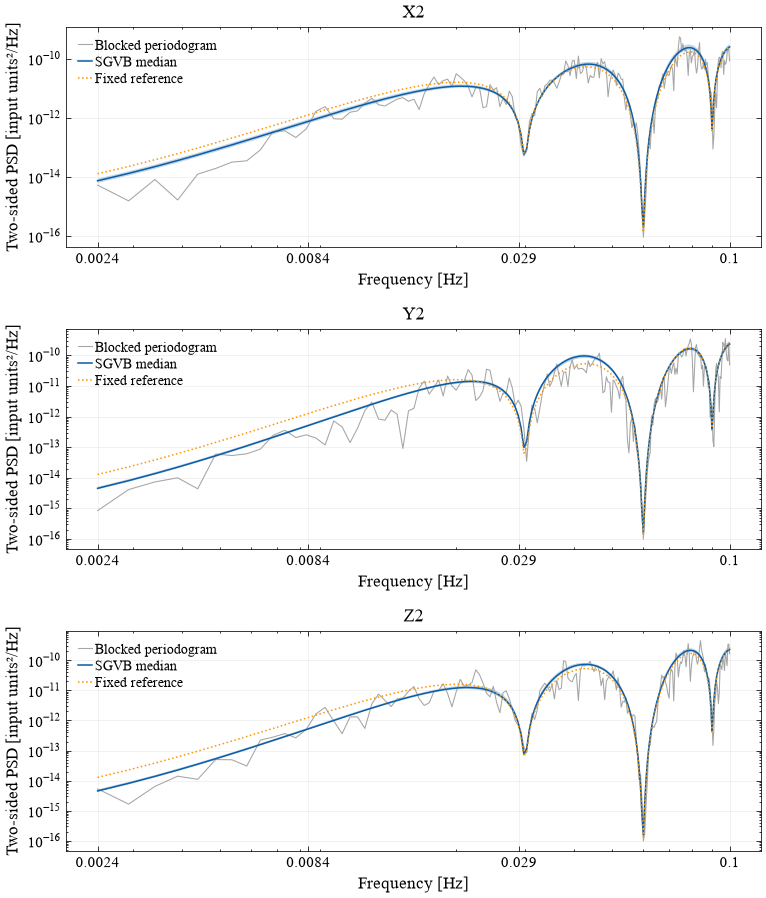
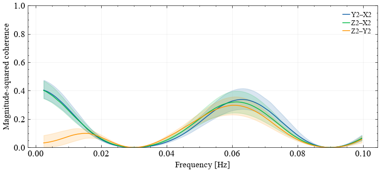
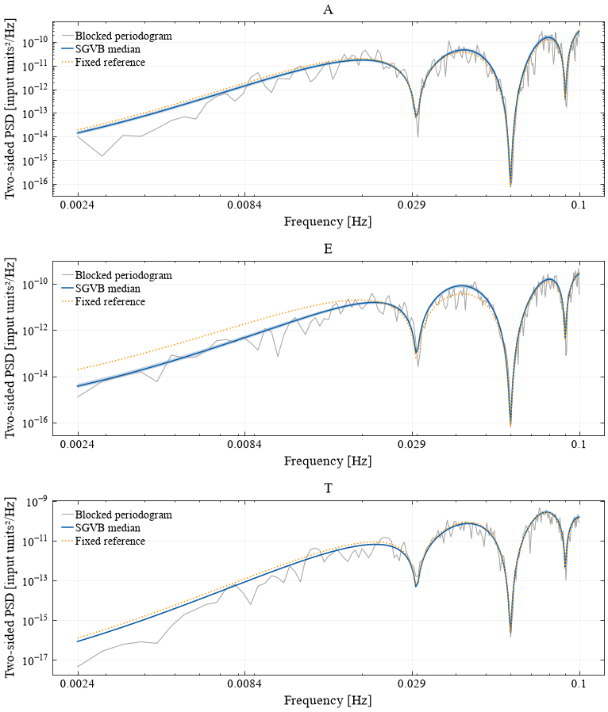
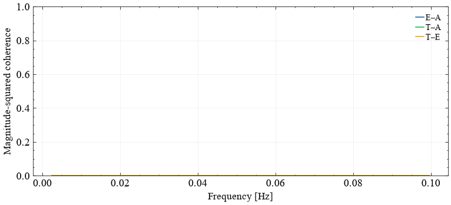

LISA example#
Fit the same short LISA data slice in XYZ2 and AET coordinates. Both fits retain the full complex spectral matrix and use independent modified-Cholesky rows. The data download, training split and reference construction are shared between the two examples.
For equal-arm second-generation Michelson TDI, use the light-travel time
tau=L/c: the common PSD factor is
16 sin²(2π f tau) sin²(4π f tau), not an unsquared sine.
See Nam et al., Table 2.
The example reference captures notch locations with a simple smooth envelope
and correlation shape; it is not the complete instrument-noise transfer model.
An explicit positive floor/decorrelation is shown for a valid reference.
Replace reference_xyz with your full physical S_ref(f) when available.
The default downloads/caches a 13.8 MB public noise-simulation truncated noise-4a sample,
then reads only 4096 rows, split into reference-training and analysis blocks.
Set DATA_SOURCE="synthetic" for a no-download model demonstration, or set
SGVB_LISA_H5 to an existing X2/Y2/Z2/t HDF5 file. The full
noise-4a source is available separately;
this notebook does not fetch the 505 MB file. A positive broad reference
envelope is fitted on the disjoint training block, with geometry held fixed.
Channel units and the TDI generation must match your chosen reference.
Setup#
# Colab installs the package; local runs use the project environment.
import subprocess
import sys
try:
import google.colab
except ImportError:
print("Using the local SGVB environment. See the repository's uv setup instructions.")
else:
subprocess.check_call([
sys.executable, "-m", "pip", "install", "-q",
"jax[cpu]==0.6.2", "numpyro==0.19.0",
"sgvb_psd[examples] @ git+https://github.com/nz-gravity/sgvb_psd.git@main",
])
Using the local SGVB environment. See the repository's uv setup instructions.
import warnings
# Progress widgets are unused; ipywidgets is optional in the local environment.
warnings.filterwarnings("ignore", message="IProgress not found.*")
from pathlib import Path
from time import perf_counter
import os
import numpy as np
import matplotlib.pyplot as plt
from scipy import signal
from sgvb_psd.psd_estimator import PSDEstimator
import jax
%matplotlib inline
plt.rcParams.update({"font.family": "sans-serif", "font.size": 11,
"axes.labelsize": 11, "axes.titlesize": 12,
"legend.fontsize": 8, "figure.dpi": 110,
"text.usetex": False})
print("JAX", jax.__version__, "devices:", jax.devices())
# Deliberately small demonstration budgets, not a convergence certificate.
BUDGET = dict(N_theta=8, nchunks=2, ntrain_map=1000,
n_elbo_maximisation_steps=300, N_samples=96, seed=7)
20:10:34|SGVB-PSD|INFO| No GPU detected. Running on CPU.
JAX 0.6.2 devices: [CpuDevice(id=0)]
Resolve the transfer nulls at the analysis-window scale#
A short rectangular FFT leaks power into deep transfer-function nulls. Apply an energy-normalized periodic Hann taper to each analysis block and average the reference with its three-bin spectral-window weights. Both coordinate systems then show window-resolved spectra and reference curves. The notch locations remain fixed by the light-travel time; their displayed depths have the finite frequency resolution of the blocks.
Nbw uses the Hann equivalent noise bandwidth as an approximate likelihood
correction. This does not establish calibrated uncertainty. The plotting
helper computes a boxcar FFT of the already-tapered data, so it does not
apply the Hann window twice. Reference uncertainty remains fixed.
# A periodic Hann taper reduces leakage into the deep transfer-function nulls.
block_length = len(data)//BUDGET["nchunks"]
assert len(data) % BUDGET["nchunks"] == 0
window = signal.windows.hann(block_length, sym=False)
energy = np.mean(window**2)
data_windowed = (data.reshape(BUDGET["nchunks"], block_length, 3)
* window[None, :, None]/np.sqrt(energy)).reshape(data.shape)
frequency_step = fs/block_length
window_bandwidth = block_length*np.sum(window**2)/np.sum(window)**2
# Under the Whittle independent-Fourier approximation, a periodic Hann
# window averages the reference with these exact discrete power weights.
spectral_window = abs(np.fft.fft(window)/block_length)**2/energy
np.testing.assert_allclose(spectral_window[[0, 1, -1]], [2/3, 1/6, 1/6])
np.testing.assert_allclose(spectral_window.sum(), 1)
def window_resolved(spectrum):
return lambda f: (2*spectrum(f)/3 + spectrum(f-frequency_step)/6
+ spectrum(f+frequency_step)/6)
reference_windowed_xyz = window_resolved(reference_xyz)
truth_xyz = window_resolved(simulation_truth) if simulation_truth is not None else None
print(f"Hann resolution: {frequency_step:.5g} Hz; approximate bandwidth correction: {window_bandwidth:.3g}")
Hann resolution: 0.00048828 Hz; approximate bandwidth correction: 1.5
Plotting helper#
Use the same units, pointwise intervals and coherence definition in both views.
XYZ2 channels#
data_xyz = data_windowed.copy()
data = data_xyz
reference = reference_windowed_xyz
truth = truth_xyz
labels = ["X2", "Y2", "Z2"]
start = perf_counter()
estimator = PSDEstimator(data, fs=fs, reference_psd=reference,
parallel_rows=True, Nbw=window_bandwidth, fmin_for_analysis=.002, fmax_for_analysis=min(.1, fs/2), **BUDGET)
_ = estimator.run(lr=.003) # Explicit rate: no costly hyperparameter search.
runtime = perf_counter() - start
assert np.all(np.isfinite(estimator.pointwise_ci))
assert np.all(np.isfinite(estimator.inference_runner.kdl_losses))
print(f"{len(data)} samples × {data.shape[1]} channels; fit {runtime:.2f} s")
if estimator.parallel_rows:
print("Independent vmapped Cholesky-row dimensions:", estimator.inference_runner.row_dimensions)
estimator_xyz = estimator
20:10:34|SGVB-PSD|INFO| Dividing data (2048, 3) into (2, 1024, 3) chunks
20:10:34|SGVB-PSD|INFO| Reducing the number of frequencies to be analyzed from 512 to 0.1...
20:10:34|SGVB-PSD|INFO| Final PSD will be of shape: 200 x 3 x 3
20:10:34|SGVB-PSD|WARNING| Input data not standardised!
20:10:34|SGVB-PSD|INFO| Using provided learning rate: 0.003
20:10:34|SGVB-PSD|INFO| Training model
20:10:36|SGVB-PSD|INFO| Model trained in 1.62s
20:10:36|SGVB-PSD|INFO| Computing posterior PSDs
2048 samples × 3 channels; fit 2.59 s
Independent vmapped Cholesky-row dimensions: (19, 60, 101)
show_fit(estimator, data, labels, truth=truth, reference=reference)


AET channels#
Apply the orthonormal XYZ2-to-AET transform to the analysis data and the full reference matrix. Correlations between A, E and T are estimated; they are not set to zero. These fits use the current joint SGVB model. The channel transform is distinct from the eigenbasis likelihood representation discussed in the LISA paper.
Q = np.array([[-1, 0, 1], [1, -2, 1], [1, 1, 1]], float)
Q /= np.sqrt(np.array([2, 6, 3]))[:, None]
np.testing.assert_allclose(Q @ Q.T, np.eye(3), atol=1e-14)
data = data_xyz @ Q.T
reference = lambda f: Q @ reference_windowed_xyz(f) @ Q.T
truth = (lambda f: Q @ truth_xyz(f) @ Q.T) if truth_xyz is not None else None
labels = ["A", "E", "T"]
start = perf_counter()
estimator = PSDEstimator(data, fs=fs, reference_psd=reference,
parallel_rows=True, Nbw=window_bandwidth, fmin_for_analysis=.002, fmax_for_analysis=min(.1, fs/2), **BUDGET)
_ = estimator.run(lr=.003) # Explicit rate: no costly hyperparameter search.
runtime = perf_counter() - start
assert np.all(np.isfinite(estimator.pointwise_ci))
assert np.all(np.isfinite(estimator.inference_runner.kdl_losses))
print(f"{len(data)} samples × {data.shape[1]} channels; fit {runtime:.2f} s")
if estimator.parallel_rows:
print("Independent vmapped Cholesky-row dimensions:", estimator.inference_runner.row_dimensions)
estimator_aet = estimator
20:10:37|SGVB-PSD|INFO| Dividing data (2048, 3) into (2, 1024, 3) chunks
20:10:37|SGVB-PSD|INFO| Reducing the number of frequencies to be analyzed from 512 to 0.1...
20:10:37|SGVB-PSD|INFO| Final PSD will be of shape: 200 x 3 x 3
20:10:37|SGVB-PSD|WARNING| Input data not standardised!
20:10:37|SGVB-PSD|INFO| Using provided learning rate: 0.003
20:10:37|SGVB-PSD|INFO| Training model
20:10:38|SGVB-PSD|INFO| Model trained in 1.00s
20:10:38|SGVB-PSD|INFO| Computing posterior PSDs
2048 samples × 3 channels; fit 1.54 s
Independent vmapped Cholesky-row dimensions: (19, 60, 101)
show_fit(estimator, data, labels, truth=truth, reference=reference)


Interpretation and budget#
The shaded bands are pointwise 90% variational intervals. Cheap settings
show the workflow; they do not establish convergence or calibrated coverage.
Increase the data duration, basis size and optimization budgets only for an
explicit analysis/validation plan. Compilation is included in the first-fit
time. JAX batches rows with vmap; actual CPU/GPU scheduling is device dependent.
Each row still includes regression on preceding channels, so cross-spectra
are retained. This is modified-Cholesky SGVB, not the removed eigenbasis mode or the
collapsed conditional-theta method in LogPSplinePSD.